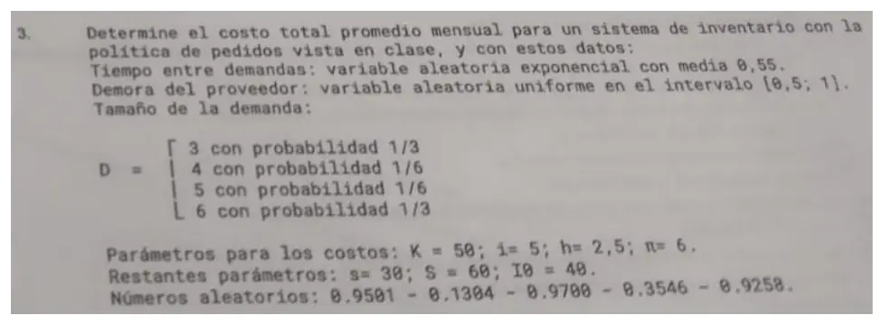

Parcial, 04/10/2025 (parte 3)
Parcial, 04/10/2025
Enunciado


Preguntas con opciones
Salen de este examen, adaptadas. Dejalas para el final, porque las opciones pueden dar pistas.
- 1
¿Qué pasa con los períodos de inactividad en el avance al próximo evento?
Se tomó: Parcial 04/10/2025, adaptada
Todos los cambios de estado ocurren en los eventos, así que el reloj salta entre ellos.
- 2
En la política (s,S), ¿cuánto se pide si al revisar I es menor que s?
Se tomó: Parcial 04/10/2025, adaptada
Se pide hasta llegar a S. Si I es mayor o igual que s, no se pide.
- 3
¿Qué diferencia hay entre verificación y validación?
Se tomó: Parcial 04/10/2025, adaptada
Verificación es el paso 5 y validación el 6, con información real de entrada.
- 4
¿Qué condición pide el M/M/1 para llegar a estado estable?
Se tomó: Parcial 04/10/2025, adaptada
Si no, en promedio llegan más de los que se pueden atender y la cola crece.
Propuesta de respuesta
Respuesta no verificada. La propuso Luta Studios con inteligencia artificial y ningún docente la revisó. Puede tener errores.
Sigo el modelo del apunte (folios 21 a 23). Al principio de cada mes se evalúa el inventario con la política . Cada tiempo entre demandas sale con y cada tamaño con las probabilidades acumuladas. Los números se usan en el orden en que el modelo los pide. El primero da el tiempo hasta la primera demanda. Después, en cada demanda, uno da su tamaño y el siguiente el tiempo hasta la próxima.
Los tamaños salen de partir con las acumuladas, da 3, da 4, da 5 y da 6.
| Reloj | Evento | Número | Cuenta | |
|---|---|---|---|---|
| 0 | Inicio y evaluación | 0,9501 | , primera demanda en 0,0282 | 40 |
| 0,0282 | Demanda | 0,1304 | , tamaño 3 | 37 |
| 0,9700 | , próxima en 0,0449 | |||
| 0,0449 | Demanda | 0,3546 | , tamaño 4 | 33 |
| 0,9258 | , próxima en 0,0873 | |||
| 0,0873 | Demanda | No quedan números para el tamaño | 33 |
En la evaluación de , , así que no se pide y no hay costo de pedido. Con cinco números se procesan dos demandas. La tercera llega en y ya no queda número para su tamaño, así que la corrida termina ahí, con meses. nunca fue negativo.
| Desde | Hasta | Área | |
|---|---|---|---|
| 0 | 0,0282 | 40 | 1,1261 |
| 0,0282 | 0,0449 | 37 | 0,6198 |
| 0,0449 | 0,0873 | 33 | 1,3993 |
| Total | 3{,}1453 |
| Costo | Cuenta | Por mes |
|---|---|---|
| Pedido | Ningún pedido | 0 |
| Mantenimiento | 90{,}06 | |
| Faltante | 0 | |
| Total | 90{,}06 |
El costo total promedio mensual es de 90{,}06. , y no llegan a usarse, porque en ese tramo no hubo pedidos ni faltantes.
Respuesta no verificada. Puede tener errores.
Se armó con Resumen del parcial, sección Sistema de inventario (Planteo, Costos y Cómo se arma la simulación).
Quedó en duda: La consigna no dice cuántos meses simular ni en qué orden usar los números. Tomé el orden del modelo del apunte y corté la corrida cuando se acabaron, a los 0,0873 meses. Si se simula un mes entero volviendo a usar los mismos números desde el primero, aparece una demanda de 6 y el costo da 69,47. Puede que la cátedra espere otra lectura.
¿Cómo te fue?
Marcá cada tema del examen. Las preguntas con opciones ya se corrigieron solas.
- InventarioPlanteo, en Parcial